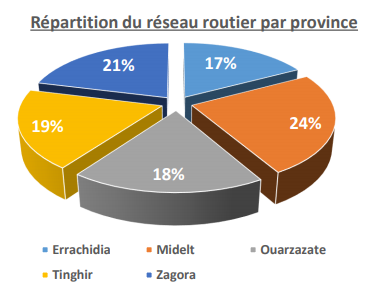

-Le réseau routier dans la région de Drâa Tafilalet-
Réseau routier à Drâa-Tafilalet
La carte suivante affiche les différentes classes des routes existantes dans la région de Drâa-Tafilalet.Elle permet aux entreprises de faciliter la réalisation des opérations de transaction économique,distribution des marchandises et transport de personnel en optimisant le trajet à suivre comme elle permet aux nouvelles entreprises de choisir un siège plus proche du réseau existant dont la longueur est de 5421.60km.
